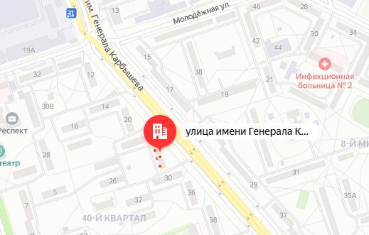

Сведения об организации
МЫ РАБОТАЕМ В СООТВЕТСТВИИ С ФЕДЕРАЛЬНЫМ ЗАКОНОМ № 442-ФЗ ОТ 28 ДЕКАБРЯ 2013 ГОДА «ОБ ОСНОВАХ СОЦИАЛЬНОГО ОБСЛУЖИВАНИЯ ГРАЖДАН В РОССИЙСКОЙ ФЕДЕРАЦИИ» ПО ПОСТАНОВЛЕНИЮ АДМИНИСТРАЦИИ ВОЛГОГРАДСКОЙ ОБЛАСТИ №89 ОТ 20 ДЕКАБРЯ 2014 Г.
СВЕДЕНИЯ О ПОСТАВЩИКЕ СОЦИАЛЬНЫХ УСЛУГ, РАЗМЕЩАЕМЫЕ НА ОФИЦИАЛЬНОМ ПОРТАЛЕ КОМИТЕТА СОЦИАЛЬНОЙ ЗАЩИТЫ НАСЕЛЕНИЯ ВОЛГОГРАДСКОЙ ОБЛАСТИ:
| Дата государственной регистрации в качестве поставщика социальных услуг с указанием числа, месяца и года регистрации: | 28.02.2022 года дата регистрации в Минюсте РФ. Дата включения в реестр поставщиков социальных услуг - 12.04.2022г. |
| Организационно-правовая форма и форма собственности поставщика социальных услуг | Автономная некоммерческая организация. |
| Сведения об учредителе (учредителях) поставщика социальных услуг - организации социального обслуживания с указанием наименования, места его (их) нахождения, контактных телефонов и адресов электронной почты: |
Физические лица – 3 человека,
|
| Место нахождения поставщика социальных услуг, его филиалах (при их наличии) с указанием адреса и схемы проезда: |
Юр. адрес: 404130 Волгоградская область, г.Волжский, ул.Ленина, дом 37, кв.20 Факт. адрес: Волгоградская область, г.Волжский, ул.им.Карбышева, дом 28 e-mail: sinyaya_ptica2022@mail.ru Филиалов – нет. Схема проезда:  |
| Режим, график работы с указанием дней и часов приема, перерыва на обед: |
Режим, график работы: Пн.-пт. 14:00-20:00 по расписанию групп и индивидуальных занятий без перерыва на обед. |
| Контактные телефоны с указанием кода населенного пункта, в котором расположен поставщик социальных услуг, и об адресах электронной почты: |
Телефоны: 8-905-395-68-22, 8-909-381-67-87 e-mail: sinyaya_ptica2022@mail.ru |
| Руководитель, его заместители, руководители филиалов (при их наличии у поставщика социальных услуг) с указанием контактных телефонов и адресов электронной почты; |
Директор – Королева Алина Арамовна Телефон 8-905-395-68-22; e-mail: sinyaya_ptica2022@mail.ru |
| Структура и органы управления организации социального обслуживания с указанием наименований структурных подразделений (органов управления), фамилий, имен, отчеств и должностей руководителей структурных подразделений, места нахождения структурных подразделений, адресов официальных сайтов структурных подразделений (при наличии), адресов электронной почты структурных подразделений (при наличии); о положениях о структурных подразделениях организации социального обслуживания (при их наличии); |
Высшим органом управления Организации является Собрание учредителей, основная функция которого – обеспечение соблюдения Организацией целей, в интересах которых она была создана. Единоличным исполнительным органом Организации является директор Королева Алина Арамовна. Структурных подразделений нет. В соответствии со статьей 23 ФЗ № 442-ФЗ попечительский совет не создавался. |
| Персональный состав работников организации социального обслуживания с указанием с их согласия уровня образования, квалификации и опыта работы; |
Персональный состав работников: Директор – 1 Специалист по социальной работе – 1 Специалист по социально-педагогической работе – 5 Специалист по социально-психологической работе – 4 Бухгалтер – 1 Администратор – 1 |
| Информация о наличии лицензий на осуществление деятельности, подлежащей лицензированию в соответствии с законодательством Российской Федерации (с приложением электронного образа документов) | Деятельность не подлежит лицензированию. |
| Материально-техническое обеспечение предоставления социальных услуг (наличие оборудованных помещений для предоставления социальных услуг, в том числе библиотек, объектов спорта, средств обучения и воспитания, условиях питания и обеспечения охраны здоровья получателей социальных услуг, доступе к информационным системам в сфере социального обслуживания и сети "Интернет"); | Организация имеет арендованное помещение, площадью 189 кв.м., занимающее первый этаж жилого дома и состоящее из двух залов по 43 и 44 кв.м., а также два кабинета для занятий 23 и 12 кв. м., рабочий кабинет, подсобные помещения, санузел. Залы оборудованы для спортивных и хореографических занятий (имеется балетный станок и зеркала), все кабинеты оборудованы необходимой мебелью (столы, стулья, шкафы для метод. литературы). Техническое оснащение: фортепиано, музыкальный центр. Помещение оснащено противопожарной сигнализацией. В организации созданы условия для обеспечения охраны здоровья. Имеется доступ к информационной системе социального обслуживания «Реестр получателей социальных услуг» и доступ к сети Интернет. |
| Форма социального обслуживания, в которой поставщик социальных услуг предоставляет социальные услуги (стационарной, полустационарной, на дому) | Полустационарная форма социального обслуживания. |
| Виды социальных услуг, предоставляемых поставщиком социальных услуг (социально-бытовые, социально-медицинские, социально-психологические, социально-педагогические, социально-трудовые, социально-правовые, услуги в целях повышения коммуникативного потенциала получателей социальных услуг, срочные социальные услуги) |
Получателям социальных услуг с учетом их индивидуальных потребностей предоставляются следующие виды социальных услуг: Социально-психологические, предусматривающие оказание помощи в коррекции психологического состояния получателей социальных услуг для адаптации в социальной среде, в том числе оказание психологической помощи:
Социально-педагогические, направленные на профилактику отклонений в поведении и развитии личности получателей социальных услуг, формирование у них позитивных интересов (в том числе в сфере досуга), организацию их досуга:
|
| Порядок и условия предоставления социальных услуг по видам социальных услуг и формам социального обслуживания, в том числе перечень социальных услуг, предоставляемых поставщиком социальных услуг; порядок и условиях предоставления социальных услуг бесплатно и за плату по видам социальных услуг и формам социального обслуживания |
В соответствии с Порядком предоставления социальных услуг в полустационарной форме социального обслуживания в центрах (отделениях) психолого-педагогической помощи населению, утвержденного приказом комитета социальной защиты населения Волгоградской области от 19 февраля 2015 г. № 347. Социальные услуги предоставляются получателю социальных услуг на основании договора о предоставлении социальных услуг. Социальные услуги предоставляются бесплатно следующим категориям получателей социальных услуг:
Социальные услуги предоставляются получателям социальных услуг за плату или частичную плату, если среднедушевой доход этих лиц на дату обращения превышает предельную величину среднедушевого дохода для предоставления социальных услуг бесплатно. Размер ежемесячной платы за предоставление социальных услуг поставщиком социальных услуг рассчитывается исходя из количества фактически оказанных услуг на основе тарифов на социальные услуги, установленных комитетом тарифного регулирования Волгоградской области. Размер ежемесячной платы не может превышать пятьдесят процентов разницы между среднедушевым доходом получателя социальных услуг и предельной величиной среднедушевого дохода для предоставления социальных услуг бесплатно. |
| Численность получателей социальных услуг по формам социального обслуживания и видам социальных услуг за счет бюджетных ассигнований бюджетов субъектов Российской Федерации, численность получателей социальных услуг по формам социального обслуживания и видам социальных услуг за плату, частичную плату в соответствии с договорами о предоставлении социальных услуг за счет средств физических лиц и (или) юридических лиц. |
Полустационарная форма обслуживания: за 2023 год обслужено 124 человека. Количество свободных мест на актуальную дату можно уточнить по телефону, указанному в разделе 6 настоящих сведений. За счет бюджетных ассигнований бюджета субъекта Российской Федерации обслужено 124 человека в полустационарной форме социального обслуживания. Социальные услуги за плату, частичную плату в соответствии с договорами о предоставлении социальных услуг за счет средств физических лиц и (или) юридических лиц – услуги не предоставляются. |
| Количество свободных мест для приема получателей социальных услуг по формам социального обслуживания, финансируемых за счет бюджетных ассигнований бюджетов субъектов Российской Федерации, и количество свободных мест для приема получателей социальных услуг по формам социального обслуживания за плату, частичную плату в соответствии с договорами о предоставлении социальных услуг за счет средств физических лиц и (или) юридических лиц. |
Количество мест:
Форма социального обслуживания – полустационарная. Узнать о количестве свободных мест в настоящее время можно по телефону: 89093816787. |
| Объем предоставляемых социальных услуг за счет бюджетных ассигнований бюджетов субъектов Российской Федерации и за плату, частичную плату в соответствии с договорами о предоставлении социальных услуг за счет средств физических лиц и (или) юридических лиц. |
За 2022 год:
За 2023 год:
|
| Наличие лицензий на осуществление деятельности, подлежащей лицензированию в соответствии с законодательством Российской Федерации (с приложением электронного образа документов). | Деятельность, подлежащая лицензированию, не осуществляется. |
| Финансово-хозяйственная деятельность (с приложением электронного образа плана финансово-хозяйственной деятельности) |
Источниками финансового обеспечения социального обслуживания могут являться:
|
| Правила внутреннего распорядка для получателей социальных услуг, правила внутреннего трудового распорядка, коллективный договор (с приложением электронного образа документов); |
Правила внутреннего распорядка для получателей социальных услуг утверждены приказом от 09.03.2022 года. Правила внутреннего трудового распорядка утверждены приказом от 09.03.2022 года Коллективный договор не заключался, в связи с отсутствием уведомления со стороны работников. |
| Информация о результатах проведенных проверок. Наличие предписаний органов, осуществляющих государственный контроль в сфере социального обслуживания, и отчетов об исполнении указанных предписаний |
Государственный контроль в сфере социального обслуживания не осуществлялся. |
| Информация о проведении независимой оценки качества оказания ими социальных услуг. |
Независимая оценка качества оказания социальных услуг не проводилась. |
| Наглядная информация о структуре официального сайта | Информация представлена на сайте организации в виде подраздела «Навигация»: https://sinyaya-ptica.ru/ |
| Ссылка на федеральную государственную информационную систему "Единый портал государственных и муниципальных услуг (функций)" | Информация представлена на сайте организации в виде во вкладке «Полезное» https://sinyaya-ptica.ru/ |
| Информация о преимуществах получения государственных и муниципальных услуг в электронной форме | Информация представлена на сайте организации в виде во вкладке «Полезное» https://sinyaya-ptica.ru/ |
| Ссылка на официальные сайты органа государственной власти субъекта Российской Федерации, уполномоченного на осуществление предусмотренных Федеральным законом "Об основах социального обслуживания граждан в Российской Федерации" полномочий в сфере социального обслуживания на территории субъекта Российской Федерации (далее - уполномоченный орган субъекта Российской Федерации), организаций, которые находятся в ведении уполномоченного органа субъекта Российской Федерации и которым в соответствии с Федеральным законом "Об основах социального обслуживания граждан в Российской Федерации" предоставлены полномочия на признание граждан нуждающимися в социальном обслуживании и составление индивидуальной программы предоставления социальных услуг на территориях одного или нескольких муниципальных образований |
Информация представлена на сайте организации в виде во вкладке «Полезное» Организации, уполномоченные на признание граждан нуждающимися в социальном обслуживании и составлении индивидуальной программы предоставления социальных услуг в Волгоградской области |
| Ссылка на Министерства труда и социальной защиты Российской Федерации. | Информация представлена на сайте организации в виде во вкладке «Полезное» https://sinyaya-ptica.ru/ |